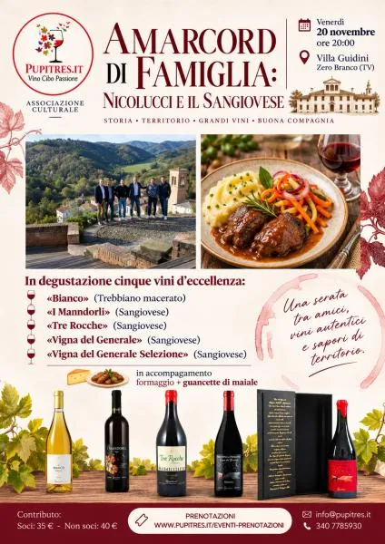

ven 20 nov
Amarcord di Famiglia: a Zero Branco una serata dedicata al Sangiovese e alla cantina Nicolucci
C'è un filo sottile che lega il vino ai ricordi. Un filo fatto di persone, gesti tramandati, luoghi che cambiano lentamente e storie che continuano a essere raccontate attorno a una tavola.
 Indicazioni
Indicazioni
- Costi e prenotazioni
- Costo non indicato · Prenotazione non indicata
- Programma
- Programma da verificare. Apri la fonte ufficiale per orari e possibili aggiornamenti.
- In caso di maltempo
- Nessuna indicazione specifica pubblicata.
- Note
- Acquisito automaticamente dalla fonte.
L’EVENTO
Descrizione completa
C'è un filo sottile che lega il vino ai ricordi. Un filo fatto di persone, gesti tramandati, luoghi che cambiano lentamente e storie che continuano a essere raccontate attorno a una tavola.
Da questa suggestione nasce
"Amarcord di Famiglia: Nicolucci e il Sangiovese"
, il nuovo evento organizzato dall'associazione Pupitres, in programma giovedì 20 novembre negli spazi di Villa Guidini a Zero Branco.
Il titolo richiama volutamente il celebre "Amarcord" felliniano. Non un semplice omaggio cinematografico, ma un invito a guardare al vino come custode di memoria e identità. Protagonista della serata sarà infatti la famiglia Nicolucci, tra le realtà più rappresentative della Romagna del vino, legata da generazioni alla valorizzazione del Sangiovese.
L'incontro accompagnerà i partecipanti alla scoperta di una storia familiare che si intreccia con quella del territorio. Attraverso il racconto della cantina e la degustazione di alcune etichette significative, sarà possibile comprendere come il vino non sia soltanto un prodotto agricolo, ma anche un patrimonio culturale capace di raccontare il carattere di una terra e delle persone che la abitano.
Il Sangiovese sarà il filo conduttore dell'intera esperienza. Un vitigno che nel corso del tempo ha saputo interpretare anime differenti e che, nelle colline romagnole, trova una delle sue espressioni più autentiche. Calice dopo calice emergeranno sfumature, tradizioni e visioni che hanno contribuito a costruire il percorso della famiglia Nicolucci.
Con questo appuntamento Pupitres prosegue il proprio percorso di divulgazione enoculturale, proponendo serate in cui la degustazione diventa uno strumento per approfondire territori, persone e storie spesso poco conosciute dal grande pubblico.
Perché dietro ogni grande vino ci sono sempre delle bottiglie da assaggiare, ma soprattutto delle storie da ricordare.
Informazioni e prenotazioni:
disponibili sul sito Pupitres.it.
IL PROGRAMMA
Programma e orari
Appuntamenti raccolti dalle fonti elencate. Dove manca un orario, non è ancora disponibile in questa scheda.
Programma pubblicato
- Dal 2026-11-20 al 2026-11-20
INFORMAZIONI UTILI
Prima di partire
- Controllare la fonte prima di partire.
ORGANIZZAZIONE